リスト : 式入力電卓
import tkinter as tk
from math import *
root = tk.Tk()
root.option_add('*font', ('', 14))
# 式を格納するオブジェクト
buffer = tk.StringVar()
buffer.set("")
# 計算
def calc(event):
if buffer.get():
value = eval(buffer.get())
buffer.set(str(value))
# エントリー
e = tk.Entry(root, textvariable = buffer)
e.pack()
e.focus_set()
# バインディング
e.bind('<Return>', calc)
root.mainloop()
widget.focus_set()
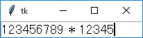 数式を入力する
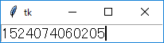 リターンキーで計算する
widget.bind(eventsequence, callback)
<modifier-modifier-type-detail>
| Key, KeyPress | キーが押された |
| KeyRelease | キーが離された |
| Button, ButtonPress | マウスのボタンが押された |
| ButtonRelease | マウスのボタンが離された |
| Motion | マウスの移動 |
| Enter | マウスカーソルがウィンドウの中に入った |
| Leave | マウスカーソルがウィンドウから出た |
| Control | Ctrl キーを押しながらの入力 |
| Shift | Shift キーを押しながらの入力 |
| Alt | Alt キーを押しながらの入力 |
| Button1, B1 | マウスの左ボタンを押しながらの入力 |
| Button3, B3 | マウスの右ボタンを押しながらの入力 |
| Double | ダブルクリック |
| Triple | トリプルクリック |
| 変数名 | データ |
|---|---|
| num | マウスボタンの番号 |
| x,y | マウスカーソルの座標 |
| time | イベントの発生時刻 |
| char | キーに対応する文字 |
| keysym | キーに対応する名前 |
リスト : キーの名前を表示
import tkinter as tk
root = tk.Tk()
root.option_add('*font', ('', 14))
buffer = tk.StringVar()
buffer.set('')
# キーの表示
def print_key(event):
key = event.keysym
buffer.set('push key is {}'.format(key))
# ラベルの設定
tk.Label(root, text = '*** push any key ***').pack()
a = tk.Label(root, textvariable = buffer)
a.pack()
a.bind('<Any-KeyPress>', print_key)
a.focus_set()
root.mainloop()
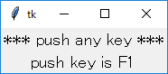 F1 キーを押したときの動作
| xscrollcommand | x 方向のスクロールメソッドを指定 |
| yscrollcommand | y 方向のスクロールメソッドを指定 |
| selectmode | セレクションモード |
リスト : 色の選択
import tkinter as tk
root = tk.Tk()
root.option_add('*font', ('', 12))
buff = tk.StringVar()
buff.set("")
# 色の選択
def get_color(event):
xs = lb.curselection()
if len(xs) != 0:
color = lb.get(xs[0])
buff.set(color)
la.configure(bg = color)
# ラベルの生成
la = tk.Label(root, textvariable = buff)
la.pack(fill = tk.X)
# リストボックスの生成
lb = tk.Listbox(root)
lb.pack()
# バインディング
lb.bind('<ButtonRelease-1>', get_color)
for x in ['red', 'green', 'blue', 'yellow', 'cyan', 'pink', 'white', 'black']:
lb.insert('end', x)
root.mainloop()
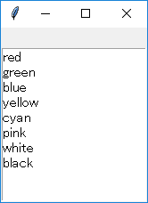 初期状態
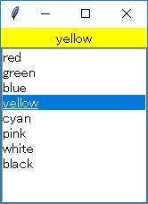 yellow を選択
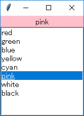 pink を選択
| orient | スクロールバーの方向 |
| troughcolor | 矢印とスクロールの隙間の色 |
| command | スクロールバーが動いたときに実行するメソッド |
xscrollcommand = scrollbar_widget.set
command = listbox_widget.yview
リスト : フォントの表示
import tkinter as tk
import tkinter.font as font
root = tk.Tk()
# フォントの選択
def get_font(event):
xs = lb.curselection()
if len(xs) != 0:
la.configure(font = (lb.get(xs[0]), 12))
# ラベルの生成
la = tk.Label(root, text = "Hello, world!, こんにちは世界!!", font = ('', 12))
la.pack(fill = tk.X)
# リストボックスの生成
lb = tk.Listbox(root, selectmode = 'single', height = 20, width = 40)
lb.pack(side = 'left')
# スクロールバーの生成
sb = tk.Scrollbar(root, command = lb.yview)
sb.pack(side = 'left', fill = 'y')
lb.configure(yscrollcommand = sb.set)
# バインディング
lb.bind('<<ListboxSelect>>', get_font)
for x in sorted(font.families()):
lb.insert('end', x)
root.mainloop()
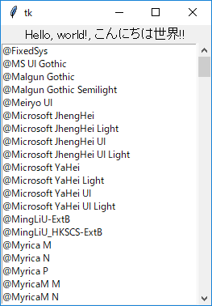 初期状態
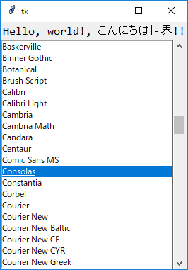 Consolas を選択
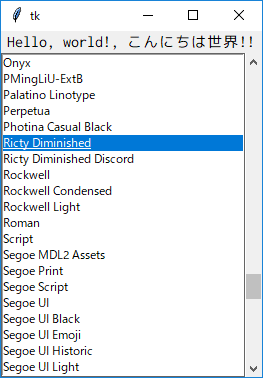 Ricty Diminished を選択
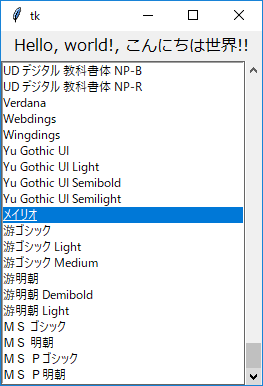 メイリオを選択
| n | 上寄せ |
| s | 下寄せ |
| e | 右寄せ |
| w | 左寄せ |
| ns | 上下方向に引き伸ばす |
| ew | 左右方向に引き伸ばす |
リスト : ボタンを格子状に配置
import tkinter as tk
root = tk.Tk()
for x in range(5):
for y in range(5):
tk.Button(text = ' {} '.format(y * 5 + x + 1)).grid(column = x, row = y, sticky = 'ew')
root.mainloop()
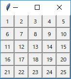
リスト : 履歴付き式入力電卓
import tkinter as tk
from math import *
root = tk.Tk()
root.option_add("*font", ('', 14))
# 式を格納するオブジェクト
buffer = tk.StringVar()
buffer.set("")
# Entry の生成
e = tk.Entry(root, width = 30, textvariable = buffer)
# Listbox の生成
lb = tk.Listbox(root, width = 30, selectmode = 'single')
# Scrollbar の生成
sb1 = tk.Scrollbar(root, orient = 'v', command = lb.yview)
sb2 = tk.Scrollbar(root, orient = 'h', command = lb.xview)
# Listbox の設定
lb.configure(yscrollcommand = sb1.set)
lb.configure(xscrollcommand = sb2.set)
# 計算
def calc(event):
expr = buffer.get()
lb.insert('end', expr)
lb.see('end')
value = eval(expr)
buffer.set(str(value))
e.icursor(0)
# 式の取り出し
def get_expr(event):
xs = lb.curselection()
if len(xs) != 0:
buffer.set(lb.get(xs[0]))
e.focus_set()
# バインディング
e.bind('<Return>', calc)
lb.bind('<Double-1>', get_expr)
# grid による配置
e.grid(row = 0, columnspan = 2, sticky = 'ew')
lb.grid(row = 1, column = 0, sticky = 'nsew')
sb1.grid(row = 1, column = 1, sticky = 'ns')
sb2.grid(row = 2, column = 0, sticky = 'ew')
# フォーカスの設定
e.focus_set()
root.mainloop()
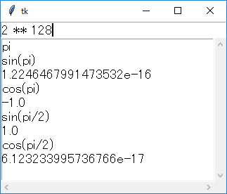 式の履歴が残るように改造した電卓
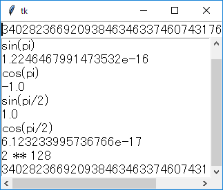 リターンキーを押せば計算結果も履歴に入る
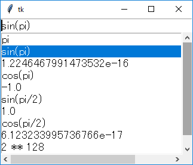 式の選択
リスト : チェックボタンとラジオボタン
import tkinter as tk
root = tk.Tk()
root.option_add('*font', ('', 14))
opts1 = tk.BooleanVar()
opts1.set(True)
opts2 = tk.BooleanVar()
opts2.set(False)
opts3 = tk.BooleanVar()
opts3.set(True)
action = tk.IntVar()
action.set(1)
tk.Label(text ='Check Button').pack()
tk.Checkbutton(text = 'option 1', variable = opts1).pack()
tk.Checkbutton(text = 'option 2', variable = opts2).pack()
tk.Checkbutton(text = 'option 3', variable = opts3).pack()
tk.Label(text ='Radio Button').pack()
tk.Radiobutton(text = 'action A', variable = action, value = 0).pack()
tk.Radiobutton(text = 'action B', variable = action, value = 1).pack()
tk.Radiobutton(text = 'action C', variable = action, value = 2).pack()
root.mainloop()
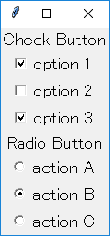 チェックボタンとラジオボタン
リスト：画像の表示 import tkinter as tk root = tk.Tk() image1 = tk.PhotoImage(file = 'earth.gif') tk.Label(root, image = image1).pack() root.mainloop()
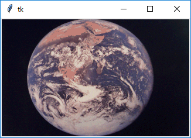 earth.gif の表示
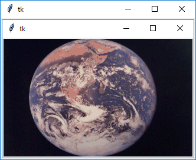 上のキャプチャー画像 (image1.png) の表示
filetypes = [ファイル種別, ... ] ファイル種別 := (名前, (拡張子, ...))
filetypes = [('Image Files', ('.gif', '.ppm'))]
filetypes = [('GIF Files', '.gif'),
('PPM Files', '.ppm'),
('ALL Files', '*')]
リスト : 画像ローダー
import tkinter as tk
import tkinter.filedialog as fd
import sys, os.path
# ファイルの選択
def load_file():
global image_data, path_name
filename = fd.askopenfilename(filetypes = [('Image Files', ('.gif', '.png', '.ppm')),
('GIF Files', '.gif'),
('PNG Files', '.png'),
('PPM Files', '.ppm')],
initialdir = path_name)
if filename != "":
path_name = os.path.dirname(filename)
image_data = tk.PhotoImage(file = filename)
label.configure(image = image_data)
# トップウィンドウ
root = tk.Tk()
# グローバル変数
path_name = os.getcwd()
image_data = tk.PhotoImage(width = 64, height = 64)
# ラベル
label = tk.Label(root, image = image_data)
label.pack()
# メニュー
m0 = tk.Menu(root);
root.configure(menu = m0);
m1 = tk.Menu(m0, tearoff = 0)
m1.add_command(label = 'Open', under = 0, command = load_file)
m1.add_separator
m1.add_command(label = 'Exit', under = 0, command = sys.exit)
m0.add_cascade(label = 'File', under = 0, menu = m1 )
root.mainloop()
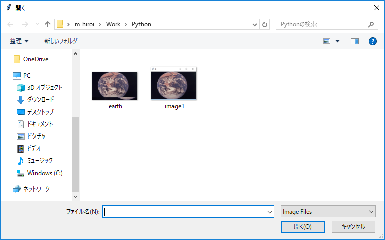 表示するファイルの選択
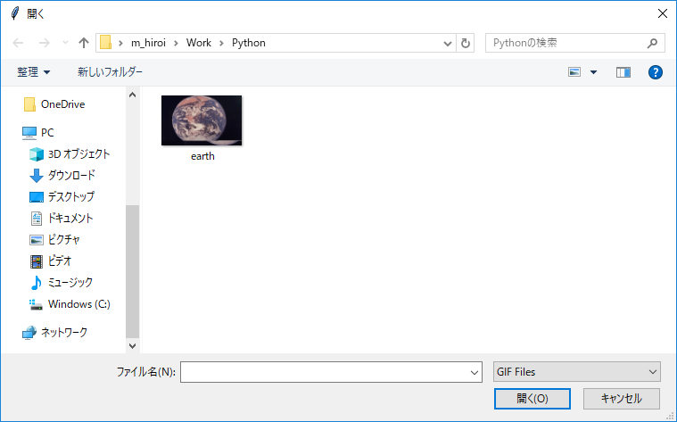 GIF ファイルの選択
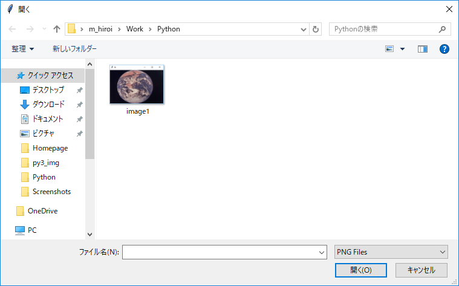 PNG ファイルの選択